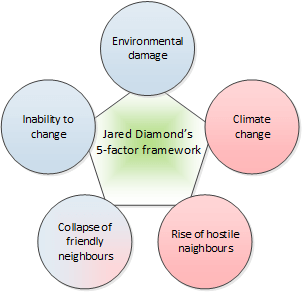
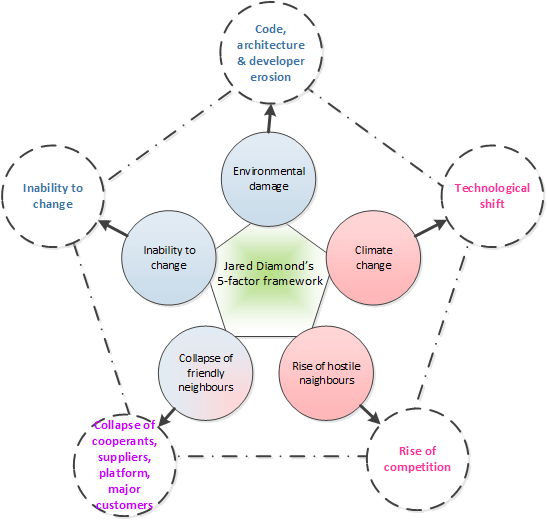
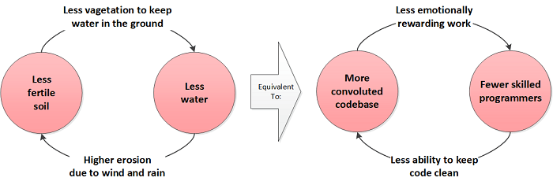
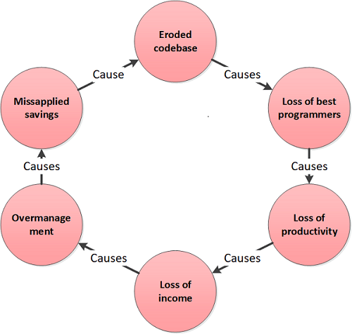
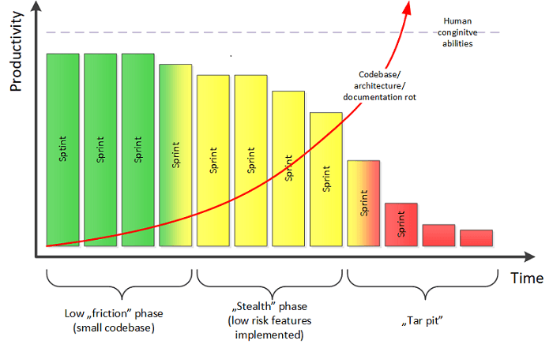
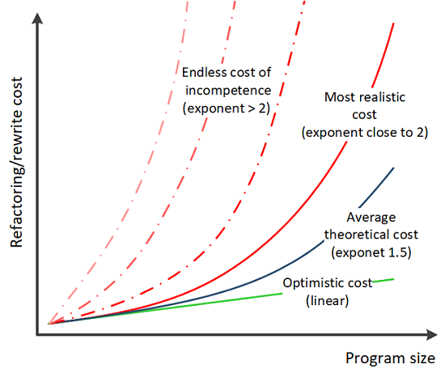
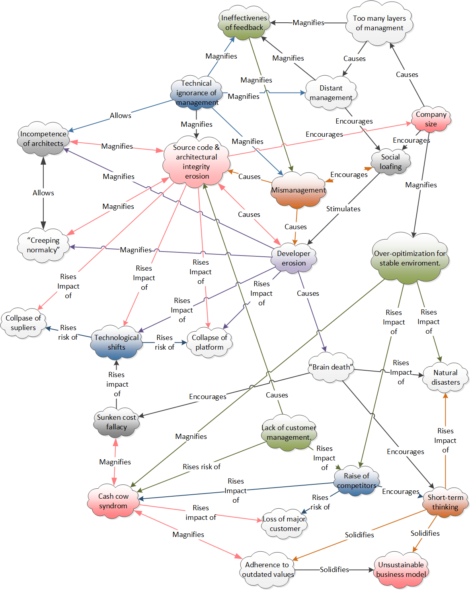

Why Software Companies Die
Disclaimer
This article is my personal opinion about the reasons for software companies’ deaths. This is not intended to be a scientific paper so many statements are intentionally bold and direct to make the text short. I did my best to present the conclusions based on my own observations and available sources, but I am not a professional sociologist, ecologist or business theoretician and may be totally wrong. Additionally, I have no data to back these statements, so treat them with a dose of skepticism.
All citations come from Collapse: How Societies Choose to Fail or Succeed unless specified otherwise.
"Whoever wishes to become a philosopher must learn not to be frightened by absurdities."
― Bertrand Russell
"Those who cannot remember the past are condemned to repeat it."
- George Santayana
A Boiling Cauldron
The world of software business is a boiling cauldron. Some companies grow rapidly, others disappear almost instantly, and some of them, usually the big ones, stagnate and wither slowly. There is very little stability in the business of software. Companies that were dominant market players (like Netscape) do not exist anymore. The ones at the top today were not here two decades ago. It seems that very few of them manage to successfully sustain in the long term.
This made me think: what are the reasons which make successful software companies diminish into oblivion almost overnight? The reasons couldn’t be purely technological. Computers haven’t changed their principles of operation since they were invented. They are just "overcomplicated music boxes", that simply get faster and more energy efficient every year. The very basic principles of building software haven’t changed much either (every program is a combination of sequences, selections and iterations). Even the recently fashionable functional programming dates back to 1958. A software company consists of people writing code. If the basis of technology is generally stable (quantum computers are not on every desk yet), then the reasons for software business failures must be human related in nature, or in other words, social.
Companies and Societies
The first question I needed to ask was whether a software company can be treated as a small society and if yes do the same rules apply. According to Wikipedia, "a society is a group of individuals involved in persistent social interaction, or a large social group sharing the same spatial or social territory, typically subject to the same political authority and dominant cultural expectations. Societies are characterized by patterns of relationships (social relations) between individuals who share a distinctive culture and institutions; a given society may be described as the sum total of such relationships among its constituent of members." On the other hand, the definition of company is rather modest and states that a company is "a legal entity representing an association of people, whether natural, legal or a mixture of both, with a specific objective. Company members share a common purpose and unite to achieve specific, declared goals." These two definitions, even though expressed differently bare significant resemblance to me. Both societies and companies:
- are groups of people (individuals);
- occupy some social space or territory (a location);
- are subject to authority (management structure);
- are subject to cultural expectations (business processes and codes of conduct);
- unite individuals to achieve a common goal (provide means to sustain existence of these individuals).
These similarities made me look for possible social reasons of collapses of software companies.
A Book of Gloomy Stories
Jared Diamond in his fascinating book Collapse: How Societies Choose to Fail or Succeed investigated multiple past civilizations that experienced a successful growth followed by rapid collapse. By investigating (among others) civilizations of Easter Island, Chaco Canyon, Maya or Greenlandic Norse he created a 5 factor framework which combines the most impactful reasons of societal collapse. The reasons formulated by Diamond are:
- environmental damage caused by society, which manifests itself in environmental productivity below what is needed to sustain the population (mainly deforestation, soil erosion, overhunting, overfishing and water mismanagement);
- climate change which impacts food production;
- rise of hostile neighbors posing physical threat to society;
- collapse of friendly neighbors on whose support the society depends;
- inability to change the conduct of operations in face of above threats.
Figure 1 represents this concept visually. Red color indicates factors the society cannot control. Blue color indicates factors controllable by society. The "collapse of friendly neighbors" is a factor the society can partially control by supporting the neighbor in need.

The profound conclusion from the book "is that a society's steep decline may begin only a decade or two after the society reaches its peak numbers, wealth, and power. The reason is simple: maximum population, wealth, resource consumption, and waste production mean maximum environmental impact, approaching the limit where impact outstrips resources." Do software companies share the same fate for the same reasons?
Different Yet the Same
After pointing out similarities between societies and companies, I came to the conclusion that Diamond’s framework can be adapted to explain failures of software companies. Figure 2 presents the adapted framework.

Some of the depicted adaptations are straightforward and obvious while others require more explanation provided below.
Environmental Damage
Jared Diamond has specified environment destruction as a main culprit of societal collapse. It’s mostly repeating incarnation was soil erosion caused by deforestation or, more generally, devastation of natural vegetation. This in effect caused progressing food shortages leading to hunger, famine and civil war. This made me think about what the equivalent of soil is for a software company. If soil allows growing crops, and brings food to a table, then what brings food to software companies? The food for software vendors are features they can sell to customers, and new features are "grown" within the existing codebase just like crops are grown in soil. This means that the equivalent of soil erosion is source code erosion accompanied by erosion of other artifacts like documentation and architectural integrity. This analogy does not hold at the beginning of product development, before initial release, but in my opinion it holds throughout most of the lifetime of software companies.
An eroded source code is a one which is difficult to understand, vague in function, chaotic in structure and generally difficult to change. Just like a society which needs to grow crops in the same soil every year, a software company needs to repeatedly adjust its software product (to meet changing market demands) by modifying its existing codebase. In case of eroding soil, it takes more and more effort to grow less and less crops per year. In case of an eroded codebase, it requires more and more effort to deliver a shrinking number of adaptations per year. If the process continues, it is inevitable that at some point, costs outgrow the produced value.
Another closely related issue described by Diamond is water mismanagement. Without quality water, it is impossible to grow crops, but what is the equivalent of water in context of software development? If crops grow in soil thanks to water (sunlight taken for granted), then new features and adaptations grow within existing codebase thanks to programmers. Developer erosion (manifested as shortage or low competence) means that a limited number or even no features can be "grown" within the existing codebase just like a shortage, or contamination (e.g., salination) of water prevents reals crops from growing. Developer erosion can be caused by bad company policies or bad management practices, but is often caused by code erosion, as best programmers eventually get frustrated and leave because their basic needs don’t get satisfied. Developer erosion amplifies code erosion as new hires are not intimate with the code base and tend to simply patch it in order to mitigate risk of introducing new defects. This situation can turn into a vicious circle. Eroding codebase encourages the best developers to leave first. Then new hires compromise the codebase even more, which again causes the next group of remaining good programmers to leave and so on. High turnover may also hurt the company’s image, reducing the probability of hiring experienced programmers ("a company for interns" syndrome) and tighten the spiral of death as depicted in Figure 3.

Developer erosion has another hidden deadly result, which is the growth of cost per "unit of change" (a new feature or adaptation). Let’s consider a company employing 25 developers and able to deliver hypothetical 100 "units of change" (new features and adaptations) per year. Let’s also assume that the cost of one developer is $1000 a year. The cost of development per "unit of change" is $1000 * 25/100 = $250. Now let’s assume that the eroded code base causes frustration among developers and five of them leave. It is highly probable that the ones who left were the best, most productive ones as they have the most available options. If so, then according to Price’s law, the productivity of the remaining 20 developers is only 50 "units of change" per year (not 80 as numbers might suggest). This alters the cost of development per "unit of change" to $1000 * 20/50 = $400. Let’s assume the company’s income is proportional to delivered "units of change" per year. This is a reasonable assumption where a longer time span is concerned, as not keeping up with changing demands makes it harder to get new customers and easier to lose existing ones. If the hypothetical income is $1000 per "unit of change", then the income drops from $1000*100 - $1000*25 = $75000 to $1000*50 - $1000*20 = $30000. Such drop will obviously get noticed by management who will attribute it not to loss of competence, intelligence and wisdom (they are usually unable to assess competence of programmers), but to social loafing, because they will assume that 20 programmers (a.k.a "developer resources") should be able to deliver about 80 unit of change per year. The most often taken action is a more rigorous control achieved by the introduction of heavier software development process administered by more managers. This increases overall population and cost, and causes rising social inequality as overpopulated management tends to seek savings by replacing costly developers with cheaper ones (usually by outsourcing). This makes the codebase erode even more and the vicious circle closes as depicted in Figure 4.

According to Diamond, environmental destruction was an enabler and amplifier for other impacts. I also do share this opinion and claim that codebase and developer erosion is an enabler which makes the software company more vulnerable to other impacts described further.
Change of Climate
The second reason for societal collapse discussed by Diamond is climate change. Usually, the most impacting change was a drought impacting food production. In the case of the Greenlandic Norse, on the other hand, it was global cooling known as the Little Ice Age, which not only reduced their ability to harvest crops and raise animals, but also interrupted trade with continental Europe as sailing the north Atlantic became a challenge. In my opinion, the changes of climate are an equivalent of technological shifts, which we have been able to observe throughout the last 50 years. From the era of mainframes & terminals, we moved to workstations & servers just to go Web & mobile afterwards. These shifts imposed stress on software companies to adapt their existing solutions to the new reality, just like climate change requires the accommodation of old methods of farming and herding to prosper under new conditions. In addition to technological shifts, regulatory changes play a similar function as they can make entire branches of the economy literally disappear overnight.
Neither societies nor software companies can control "climate changes". They can only react to them. A society cultivating fertile soil with clean water surplus has more resources to successfully adapt to a new climate. Analogically, a software company with healthy codebase and competent programmers has higher chances to adapt to new technological situation than its competitors and, as a result, survive.
Rise of Hostile Neighbors
The rise of hostile neighbors is an ever present threat to every society. Invasions of hordes of vicious "barbarians" have been reasons of crisis and collapses in the past. Analogically, the rise of competition can cause software company to collapse if it is not able to respond accordingly. A classic example is Microsoft killing Netscape during the first browser war. Another example can be the rise of open source products which can be "devastating" for entire sectors, like the rise of Git which snatched considerable market share and remodeled the industry. Software companies cannot effectively control hostile neighbors unless they buy them. If buying is impossible, then the quality of existing codebase plays huge role in company’s survival. A society cultivating a fertile soil with surplus of water can produce more food to feed soldiers, and in effect can afford more soldiers to resist invasion. Analogically, a software company with the healthier codebases and skilled developers has higher chance to adapt quickly and keep up or even outpace hostile competitors.
Collapse of Friendly Neighbors
Henderson Island population is one which Jared Diamond describes as the victim of the collapse of friendly neighbors. The people of Henderson, occupying a barren piece of land in the middle of Pacific lived mainly by fishing and depended on imports of quality stone (for manufacturing tools and fishing utensils) and lumber (to build boats) from two other Pacific islands of Mangareva and Pitcairn. When the imports stopped for reasons independent of Henderson islanders, the population was left with no means to sustain fishing and went extinct.
A software company can fall victim to a collapse of business partners, suppliers (e.g., critical library vendors) or even underlying platform (Symbian, Windows Phone). A company can control this to some extent if it is able to buy collapsing supplier (e.g., Oracle buying Sun in order to preserve Java), but often it is a prohibitively costly option. Again, a healthy codebase and skilled developers enable higher adaptive abilities, which a company can use to replace no longer maintained subcomponents or port software to a new platform.
A special case for the collapse of a friendly neighbor is the a collapse of major customer. This can happen if the company hasn’t diversified its customer base enough. This is often the result of cash cow syndrome when a software company optimizes its product for one "strategic" customer at the cost of undermining the product’s competitiveness and ability to suit other customers as well. If the codebase is not kept in modular state, with the customer specific features implemented as pluggable behavior the loss of major customer can become lethal.
Inability to Change
"It is not the strongest of the species that survives, or the most
intelligent, but the one most responsive to change."
― Leon C. Megginson
Sometimes a society (or a software company) having the inner ability to resist incoming collapse may fail to adapt for various social reasons I shall describe.
Failure to Anticipate Threat
"Groups may do disastrous things because they failed to anticipate a problem before it arrived [because] they have had no prior experience with such problems and so may not have been sensitized to the possibility." The growth of software industry since its beginning has been exponential, causing its constant immaturity and collective amnesia as most practitioners have not been in the industry long enough to experience past failures and draw conclusions from them. This comes with unbalanced concentration on technological novelties (so typical for the young) at the cost of neglecting the history of technology and learning from past successes and mistakes.
This phenomenon has two aspects. From a technical perspective, it is predominately caused by a failure of software architects (understood as a role, not as a job title) to spot code, architecture and documentation rot, as well as incoming technological shifts. This is tragically ironic, since architect’s job is to predict and avoid future problems by preparing existing product to handle them gracefully. From a managerial perspective, it is caused by upper management's failure to anticipate dangerous consequences of low technical quality, if they are not technically educated themselves. Additionally, failure to understand what software development actually is may lead to the application of dysfunctional organizational patterns which make sense for other branches of industry, but fail for software development.
Failure to Perceive Threat
"After a society has or hasn’t anticipated a problem before it arrives [it can fail] to perceive a problem that has actually arrived. There are at least three reasons for such failures, all of them common in the business world and in academia."
"First, the origins of some problems are literally imperceptible. " The commonly used SCRUM method can deceive both managers and developers. When the product is young and small each sprint usually ends with success, as even bad strategic and tactic decisions exert low "friction" since the "mass" of the code is still low. As time passes, and product grows, sprints still may succeed when simple, low risk features are picked for implementation (consciously or not but often based on their cost instead of value). This situation may last undetected until some kind of shift in product direction is required. When it happens, a series of successful sprints quickly turns into a tar pit (see Figure 5).

"Another frequent reason for failure to perceive a problem after it arrived is distant managers, a potential issue in any large society or business." This problem has three common facets. First is a geographical distance between development teams and managers and/or architects. In this case, a distant manager (or architect) has a limited capability to obtain accurate information about the current state of the product in order to implement proper corrective actions. This usually happens in case of development outsourcing, especially if the time difference between locations is large (ironically, for this exact reason India is the worst possible outsourcing location for Northern American companies). Second, multilayered organizations tend to develop a thermocline of truth placed at middle management layers. In this situation, honest information about state of affairs is suppressed and replaced with positive illusion of success as it bubbles up the management structure. This makes the upper management distant from the "site," even if they actually occupy the same physical location. Third, non-technical managers and non-coding, software architects (sic!) comfortably shielded within their ivory towers may have no idea about rotting code base because they simply don’t keep an eye on it. In this case, codebase is a "site," which the manager (or architect) is distant from. "The opposite of failure due to distant managers is success due to on-the-spot managers." The Surgical Team" in XXI Century is a proposed solution utilizing on-the-spot management.
"Perhaps the commonest circumstance under which societies fail to perceive a problem is when it takes the form of a slow trend concealed by wide up-and-down fluctuations." It may be hard to spot incoming climate change when droughts are interleaved with rainfalls. Soil erodes one grain at a time, source code erodes one line at a time and market share diminishes one percent at a time. It can be difficult to spot creeping technical debt. For novice (or even senior) developers, it may be caused by so called creeping normalcy, since they might have never been actually exposed to well-engineered solution and assume that this is just the way things should be. On the other hand, management may fail to recognize rising competitor, failing partner or a shift in market demands if they are slow, until some tipping point gets reached (then things start to change astonishingly fast).
Failure to Act
"The third stop on the road map of failure is the most frequent, the most surprising and requires the longest discussion because it assumes such a variety of forms. Contrary to what [everyone] would have expected, it turns out that societies often fail even to attempt to solve a problem once it has been perceived." Big companies have slow reaction times caused by complexity of communication paths. Additionally, they tend to accumulate conservative and consciousness people over time, who are good in optimizing for stable environment. When the environment changes, these two factors combined cause them to keep heading in the wrong direction even if it is obvious to everybody around.
"Rational Behavior"
"Many of the reasons for such failure fall under the heading of what economists and other social scientists term ‘rational behavior’, arising from clashes of interest between people. That is, some people may reason correctly that they can advance their own interests by engaging in behavior harmful to other people. Scientists term such behavior rational precisely because it employs correct reasoning, even though it may be morally reprehensible."
One of the most common manifestations of "rational behavior" is short term thinking, when people are concentrated on their positive image presented to their supervisors and achieved with a series of short term immediate successes. This approach is not only "rational" but actually rational from perpetrator’s point of view. The inherent intangibility of software development makes it difficult to properly evaluate one’s contributions, so "image of proficiency" is often the only basis of one’s position and salary. This behavior is presented throughout an entire organizations from developers (Sprint vs product), through middle management (project vs product) to upper management (quarterly report vs sustainable business). The Surgical Team" in XXI Century is a proposed solution to mitigate this phenomenon at least at development level.
Another manifestation of this phenomenon is the proliferation of bandit programmers who are consciously not willing act ("not my problem" approach). This is often caused by deeper rot of moral and economical values underpinning the company which promote social loathing. The "surgical team" approach helps fighting it by imposing ownership and transparency but cannot fix the deeper problem.
Yet another manifestation of "rational thinking" is the lack of customer management. If principal customers do not have a long term stake in keeping the software company alive, it is "rational" for them to extract the maximum value from it and then abandon its corpse. If the software company is not able to manage customers’ demands, its product’s code base and architectural integrity will end up torn apart by contradictory customer demands.
Irrational Behavior
"In contrast to so-called rational behavior, other failures to attempt to solve perceived problems involve what social scientists consider 'irrational behavior': i.e. behavior that is harmful for everybody. Such irrational behavior often arises when each of us individually is torn by clashes of values: we may ignore a bad status quo because it is favored by some deeply held value to which we cling."
The strongest irrational behavior I personally observed in software companies is sunk cost fallacy. Most of the time software companies stubbornly stick to patching and "reusing" their existing software (or software components) just because they have invested in them so much in the past, even though developing new software or more often replacing it with off-the-shelf solution would make more sense. This is especially irrational nowadays with the abundance of literally "free as beer" open source software.
The second most irrational behavior is a failure to cannibalize a company’s current cash cow product, when facing exploding development costs, depleted growth options, or rising competition (though some companies manage to do it successfully). This is along with sunken cost fallacy is heavily grounded in loss aversion phenomenon uniformly presented by human beings.
Comparatively, the most visible irrational behavior of entire companies is a reluctance to change by clinging to values which no longer make sense. Greenlandic Norse chose to stick to their European lifestyle at the dawn of a little ice age and died instead of adopting Inuit lifestyles and surviving. Similarly, some software companies facing a "climate change" may still try to operate as if the change was irrelevant ("we are desktop software company, not a web site", "we are a product based company, not a service company", "we are a hardware company not a software company"). Moreover, they often put effort to boost their current activities by employing various "effectiveness initiatives," which only makes them move faster in the wrong direction towards eventual collapse.
Failure to Fix
"Finally, even after a society has anticipated, perceived, or tried to solve the problem, it may still fail for obvious possible reasons. The problem may be beyond our present capabilities to solve, a solution may exist but be prohibitively expensive, or our effort may be too little and too late. Some attempted solutions backfire and make problem worse."
When the company faces developer erosion caused by codebase erosion as described preciously, it becomes brain dead. With all best developers gone, the remaining crowd may not have enough cognitive power (or simply motivation) to properly implement the required corrective fixes, so the rewritten code may end up being as convoluted as the original one and may eventually be scrapped. Even if codebase rot does not cause developer rot (which I suspect is unlikely), the cost of fixing or rewriting does not follow a linear function but an exponential one, with average exponent value being around 1.5 (see Brooks). To prove it, let's do a thought experiment. If we had a program of 100 lines of code and each line was independent from any other line (very improbable), then changing one line of code would not require any other changes. Therefore, changing 10 lines of code would take proportionally 10 times longer than changing a single line. This means that the effort would follow a linear function for the number of lines of code. If, on the other hand, if each line of the program depending on every other line (again very improbable), then changing one line of code would require changing all other lines of code as well. In that case, changing 10 lines of code would require changing all other lines 10 times, which gives 100/10*100 = 1002/10 which is an exponential function. Real programs manifest interdependence in between these extremes (that’s why exponent 1.5 is often assumed), but convoluted design, sloppy programming and hacks move this metric, and eventually cost, closely towards quadratic function. Additionally, the incompetence of developers can raise the exponent even further practically without limit (as depicted below).

This is also the reason why ambitious rewrites often backfire with cost explosion feature abandonment, performance problems and eventually market loss (see Netscape).
Another failure to fix may be caused by management’s misunderstanding or total lack of understanding of the software development process (brain death by ignorance). This happens in (astonishingly abundant) companies operating according to "Routine" pattern, described by Gerald M. Weinberg as hyper-concentrated on process, cultivating a myth of "superhero manager", and always looking for silver bullets. These organizations respond to every crisis with organizational structure adjustments and process changes in the hope that these will miraculously fix technical issues. At the same time, they actively prevent developers to handle these issues by not willing to provide required time and resources.
Beyond Diamond’s Framework
Though not specified explicitly in Diamond's book, some societies fail because they establish themselves in inherently unsustainable areas, where the hostile environment conditions are offset by some precious natural resource, which can be traded for other goods like food, building materials, tools, etc. American ghost towns once prospering from gold mining or modern oil-rich Saudi Arabia come to mind as direct examples. For software companies, such situations happen when they establish a business model that is not sustainable in the long-term. One such model (which actually worked quite well for decades for various reasons) is the one based on selling features (or entire releases). The problem with this model is that it is governed by the law of diminishing marginal utility (where the revenue extracted from features diminishes with time as oil or gold get eventually depleted). Let’s take, for example, a word processor application. Being able to edit paragraphs in a WYSIWYG manner is a core feature of big value for customers and stimulates sales, but being able to add watermarks to every page is not valuable enough for the majority of existing users to consider the cost of upgrade. On the contrary, the subscription model seems much more sustainable. In this model, a customer obtains value every time he/she runs software, so it seems fair to periodically share some of it with the software reactors. A side advantage of this is that software creators are not forced to pump out new features just to be able to sell, and can improve non-visible qualities of the product as well while still being profitable.
Other reasons of societal collapses not mentioned by Diamond, but known to human kind, are natural disasters, with probably the best example of ancient Pompeii. Software companies do not seem to be susceptible to natural disasters like floods, earthquakes or fire, thanks to off-site backups (if done systematically) and evacuation procedures as well as a very low dependence on physical assets like computers (easily replaceable) or buildings (remote working).
The last reason of societal collapse what comes to mind is purely political. Just as societies may become governed by malevolent dictators bringing demise to their citizens (like communist Cambodia), software companies may fall pray of blinded, hostile and self-serving top level managers that bring them to decay. Nevertheless, I suspect that such situations are extremely seldom compared with all the factors mentioned so far.
Conclusions
Considering all the above, I think that collapse is natural and inevitable default end to any software company which blindly does what seems most natural: pursuit unconditional growth and unconditional profit. Both societies and companies need to actively and systematically act to prevent collapse (just as the people of Tikopia did for centuries by regulating agriculture, fishery and population).
The problem with software companies compared with societies is that things go wrong orders of magnitudes faster. A lean startup enthusiastically following flaccid SCRUM, builds an initial product quickly by adding many features every sprint. It gains market share while accumulating technical debt and suddenly it hits the wall. In response to that, it brings more people and any conceptual system coherence dissolves as there are too many cooks to spoil the broth. Costs skyrocket, agility is lost and at the end the company bursts (and all of this happens within the period of years, not decades). Figure 7 summarizes this process by presenting mutual impacts of discussed phenomena.

In order to draw a lesson form all the gloomy stories, Jared Diamond also analyzed few societies which actually managed to survive and sustain themselves for long periods of time. This brought him to identify two crucial choices distinguishing the past societies that survived from those that failed. "The courage to practice long-term thinking and to make bold, courageous, anticipatory decisions at a time when problems have become perceptible but before they have reached crisis proportions", and "the courage to make painful decisions about values"; to decide "which of the values that formerly served a society well can continue to be maintained under new changed circumstances", and "which of these treasured values must instead be jettisoned and replaced with different approaches". I’m inclined to think this applies to software companies as well.